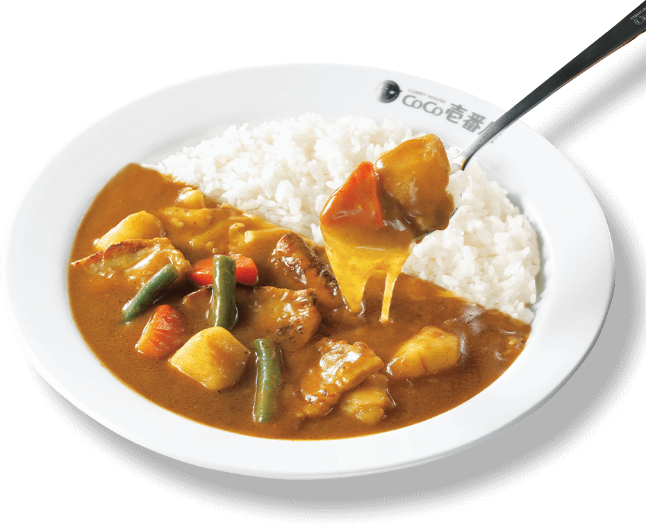

Curry

Description
Japanese curry is a thick curry with a stew-like consistency and commonly includes a protein, sweet onions, carrots, and potatoes. The sauce is thickened by a roux (a mixture of fat and flour, and an addition of curry spices).
Ingredients
- 1½ lb boneless, skinless chicken thighs
- ¼ tsp kosher salt (Diamond Crystal; use half for table salt)
- freshly ground black pepper
- 2 carrots
- 2 onions
- 3 Yukon gold potatoes
- 1 knob ginger
- 2 cloves garlic
- ½ apple
- 1½ Tbsp neutral-flavored oil (vegetable, rice bran, canola, etc.)
- 4 cups Chicken Stock/Broth (homemade or store bought)
- 1 Tbsp honey
- 1 Tbsp soy sauce
- 1 Tbsp ketchup
- 1 package Japanese curry roux
- 2-4 tsp kosher salt (Diamond Crystal; use half for table salt)
- Gather all the ingredients.
- Cut the onions into wedges.
- Peel the carrots and cut them into rolling wedges (it's called rangiri in Japanese).
- Peel the potatoes. Cut each potato into quarters (6 pieces for russet potatoes). Soak them in water for 15 minutes to remove excess starch.
- Grate the ginger (I use this grater). You will need 1 tsp of grated ginger, including the juice. Mince the garlic and set aside (I use a garlic press later when adding to the pot).
- Cut the apple into quarters, remove the core, and peel the skin.
- Grate the apple. My apple today is a lunchbox apple (smaller than regular), so I used the entire apple (yielded ½ cup or 120 ml grated apple). If your apple is regular size, use ½-¾ apple.
- Cut off the extra fat from the chicken and discard it. Then cut the chicken into bite-sized pieces. I recommend cutting it diagonally (it's called sogigiri in Japanese) to create more surface area and flatten each piece so it cooks faster. Season with salt and pepper.
- Heat the oil in a large pot over medium heat and add the onion.
- Sauté the onions, stirring occasionally, until they become translucent and tender, about 5 minutes.
- Add the minced garlic (I pass it through a garlic press for a finer texture) and grated ginger and mix well together.
- Add the chicken and cook, stirring frequently, until it's no longer pink on the outside. If the onions are getting too brown, reduce the heat to medium low temporarily.
- Add the chicken stock
- Add the grated apple, honey, soy sauce, and ketchup (or any condiment you choose to add). Please read my blog post for details.
- Add the carrots and potatoes. The broth should barely cover the ingredients. Don't worry; we don't want too much liquid here, and additional liquid will be released from the meat and vegetables.
- Simmer, covered*, on medium-low heat for 15 minutes, stirring occasionally. *Simmer uncovered if the ingredients are completely submerged in the broth.
- Once boiling, use a fine-mesh strainer to skim the scum and foam from the surface of the broth.
- Continue to cook covered until a wooden skewer goes through the carrots and potatoes.